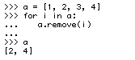

Modifying a list while looping through it in Python
Posted:
Here is an interesting thing that I found. x is a SymPy Symbol:

I would have expected to get a = [], but it only removes the first item. And yes, x + 1 passes the condition:
>>> (x + 1).has(x)
True
Clearly, it is a bad idea to modify a list while I am looping through it. I should instead be doing something like this:

But I am intrigued as to why exactly this fails. If any of the readers of the blog thinks that he know, please post in the comments. Or, if I figure it out, I will post an update. Also, here is a similar example, with a strange result:

(Sorry for the images by the way. WordPress's so called "code" blocks are impervious to indentation.)
UPDATE (a few minutes later):
Well, I figured it would come to me as to why this was happening, and it didn't take long. While I haven't read the actual Python Language Reference, this is what I am assuming is happening. This is all just my guessing on how Python is implemented. Please correct me if I am wrong.
So, obviously, a Python list is just a C array. It is probably an array of pointers, which is the only way I can see that would let it be mutable with different objects (this is how compiled languages with dynamic typing like Objective-C more or less pull it off). Now C does not have the for i in list syntax that Python has (nor does any other language that I know of. That is one of the reasons that Python is so awesome!), so if you want to recurse a list (C array), you have to do the usual for (i=0; i<=len(list); i++) { from C (or it probably uses a while loop, which would allow for things like iterators, but a for loop in C is literally just a wrapper around a while loop anyway). Then of course, inside of the loop, you just have list[i] blocks. So when I was going through my list, for example, the list of numbers in the last example, it would hit item 0 (the first item), remove it, which would amount to rebuilding the list as [2, 3, 4, 5], then it would hit item 1, which is now 3, remove it, rebuilding the list, and so on. So the even numbered elements remain because it skips every element after one that it removes. CPython must have good error handling, because eventually this would cause the indices to go beyond the length of the list. It seems to me that this behavior is not very well defined. Personally, I think that whatever you are looping through in a for loop should become immutable within the loop block. I checked Python 3.1, and the behavior is exactly the same.
Based on this, .remove() rebuilds the list each time. I would have thought it would just set the value in the array to Null, but I guess that would make it more difficult to test equality with an equivalent list that doesn't have Null values. It is good to know that .remove() does that, because it means that can be an expensive operation.